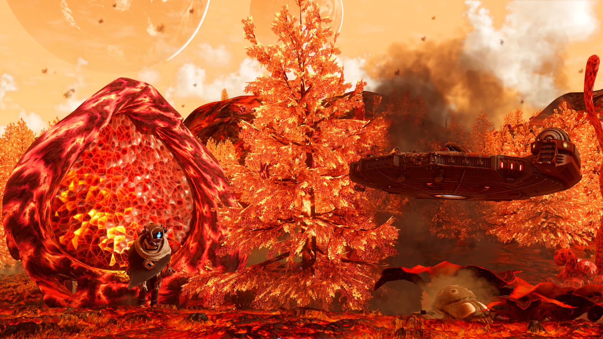

The Universe history in No man's sky
O Big Bang

O universo surgiu há cerca de 13,8 bilhões de anos, em um evento conhecido como Big Bang. Em vez de uma explosão tradicional, o Big Bang foi uma expansão extremamente rápida e violenta do espaço-tempo a partir de um ponto de densidade e temperatura infinitas. Nesse momento, toda a matéria e energia do universo estavam concentradas em um espaço minúsculo, e, à medida que o universo começou a se expandir, ele foi esfriando, permitindo a formação de partículas subatômicas e, mais tarde, átomos. Essa expansão continua até hoje, e foi o começo da formação das estrelas, galáxias e outros corpos celestes.
Formação das Estrelas
Após milhões de anos da explosão inicial, o universo começou a esfriar, permitindo a formação dos primeiros átomos, principalmente hidrogênio e hélio. Esses átomos se agruparam devido à gravidade, dando origem às primeiras estrelas. A fusão dentro dessas estrelas gerou elementos mais pesados, e, à medida que elas morriam e explodiam em supernovas, espalhavam esses elementos pelo espaço. Com o tempo, essas estrelas e seus resíduos se agruparam para formar as galáxias, estruturas imensas que abrigam bilhões de estrelas e outros corpos celestes.
Formação dos Planetas
Os planetas começaram a se formar a partir do material lançado pelas estrelas durante explosões massivas chamadas supernovas. Essas explosões espalharam elementos pesados pelo espaço, como carbono, oxigênio e ferro, que se agruparam devido à gravidade. Ao longo do tempo, esse material formou discos de poeira e gás, nos quais as partículas se colidiam e se uniam, dando origem a planetas, luas e outros corpos celestes. Esse processo foi fundamental para a criação dos sistemas planetários, como o nosso.
Origem da Vida
A vida na Terra surgiu há bilhões de anos, provavelmente nos oceanos primitivos, em um ambiente rico em compostos químicos. Os primeiros organismos eram microscópicos, como as bactérias e arqueias, que surgiram em condições extremas. Com o tempo, esses organismos simples evoluíram para formas de vida mais complexas, impulsionando a diversidade biológica que vemos hoje. Esse processo gradual levou à formação de seres vivos capazes de realizar a fotossíntese, respirando e liberando oxigênio, o que mudou a composição da atmosfera terrestre e preparou o terreno para o surgimento de organismos multicelulares.